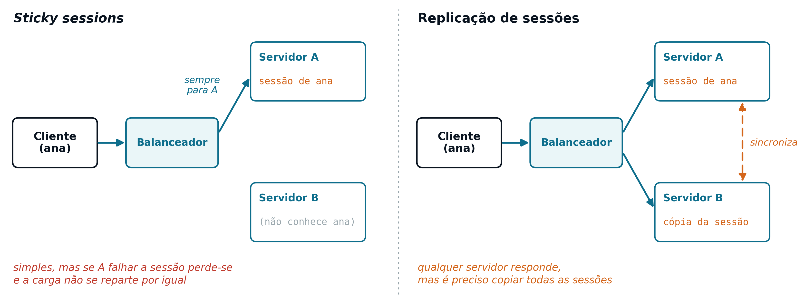
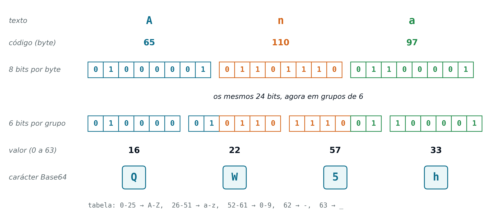
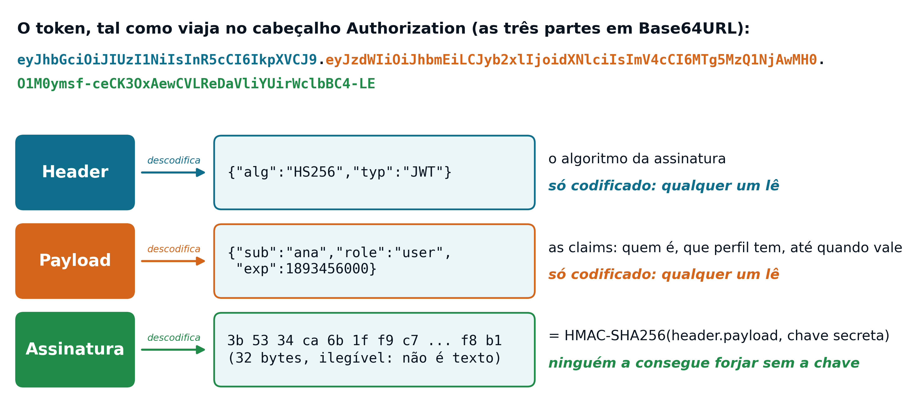
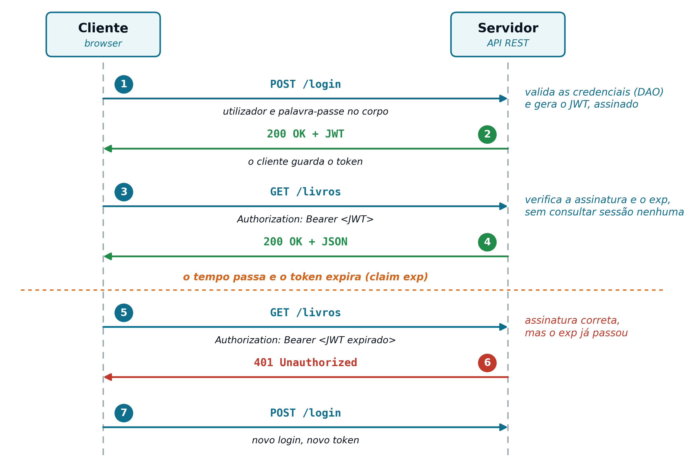
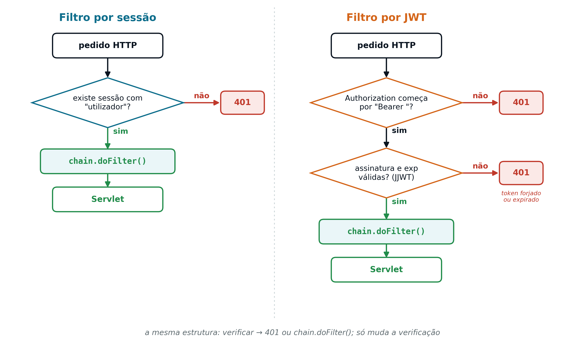
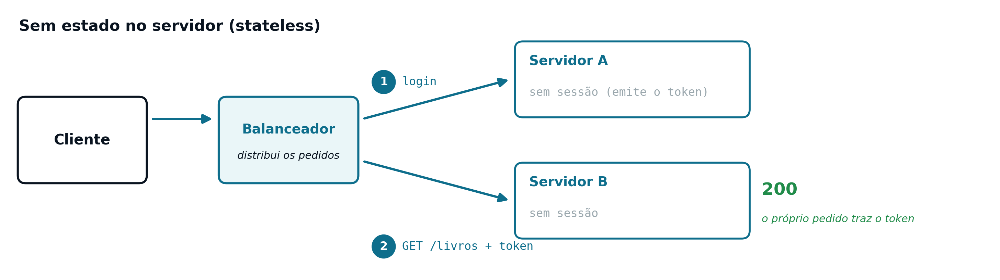
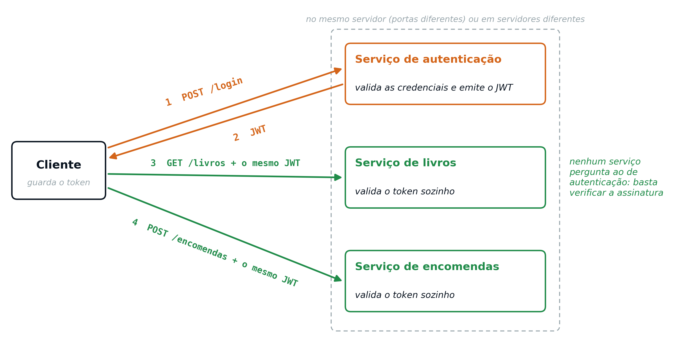

8 Web Services REST (Parte 2) e o Cliente em JavaScript
8.1 Limitações de Sessões em Sistemas Distribuídos
Uma aplicação web com muitos utilizadores tem de escalar, isto é, de aguentar mais trabalho (mais utilizadores, mais pedidos por segundo) sem ficar lenta nem parar. Há duas formas de o fazer:
- Escalabilidade vertical
- Dar mais recursos (processadores, memória) à mesma máquina. É simples, porque a aplicação não muda, mas tem um limite físico e não resolve o problema do ponto único de falha: se essa única máquina avariar ou tiver de ser reiniciada, a aplicação inteira fica indisponível
- Escalabilidade horizontal
- Juntar mais servidores iguais, a correr em paralelo, com um balanceador (load balancer) a repartir os pedidos entre eles. Quase não tem limite, porque basta acrescentar servidores, e, se um falhar, os outros continuam a responder
A diferença é a mesma que num supermercado: em vez de ter um único operador de caixa cada vez mais rápido (vertical), abrem-se mais caixas, com uma fila única que encaminha cada cliente para a primeira caixa livre (horizontal). Para isto funcionar, qualquer caixa tem de conseguir atender qualquer cliente. As aplicações web com muitos utilizadores escalam na horizontal, e é aí que as sessões levantam problemas.
O Capítulo 7 terminou a apontar esse problema: um modelo de autenticação baseado em HttpSession (ver Capítulo 5) exige que o servidor guarde, em memória, o estado de cada utilizador autenticado. Assim que existe mais do que um servidor (vários Tomcats, cada um com a mesma aplicação instalada, à frente dos quais um balanceador reparte os pedidos), essa memória deixa de ser automaticamente partilhada entre eles. Não se trata de várias instâncias da mesma Servlet: dentro de um Tomcat, os pedidos simultâneos são atendidos por vários threads da mesma instância (ver Capítulo 4), que partilham a mesma memória e, portanto, as mesmas sessões.
Existem paliativos conhecidos para este problema (Figura 8.1), as sticky sessions (encaminhar sempre o mesmo cliente para o mesmo servidor) e a replicação de sessões entre servidores, mas ambos têm um custo: o primeiro limita a forma como os pedidos podem ser distribuídos, e o segundo exige infraestrutura adicional só para manter os servidores sincronizados. Nenhum dos dois resolve o problema na raiz; ambos são formas de contornar uma dependência de estado que, para uma API REST (ver Capítulo 7), não deveria sequer existir.

8.3 JWT: um Token Sem Estado
Um JSON Web Token (JWT) é um formato normalizado de token, desenhado para transportar informação de forma compacta e verificável, sem que o servidor precise de guardar nada sobre ele. Um JWT tem sempre três partes, separadas por pontos:
<header>.<payload>.<assinatura>- Header
-
Metadados sobre o próprio token, por exemplo
{"alg":"HS256","typ":"JWT"}:algindica o algoritmo da assinatura (HS256é um HMAC com SHA-256);typindica que se trata de um JWT, é opcional e, na prática, tem quase sempre este valor - Payload
-
Os dados que o token transporta, as claims (afirmações sobre o utilizador), por exemplo
{"sub":"ana","role":"user","exp":1893456000}.sub(subject) indica quem é o utilizador;roleé o seu perfil, uma claim definida pela própria aplicação;exp(expiration) é o momento até ao qual o token vale, contado em segundos desde 1 de janeiro de 1970 (aqui, 1 de janeiro de 2030) - Assinatura
- O resultado de assinar criptograficamente o header e o payload com uma chave secreta, conhecida apenas pelo servidor
Cada uma destas três partes é codificada em Base64URL e concatenada com pontos, resultando na string longa e ilegível característica de um JWT (como a do exemplo do cabeçalho Authorization acima). O Base64 escreve quaisquer dados usando só 64 caracteres seguros (as letras maiúsculas e minúsculas, os algarismos e mais dois símbolos): cada 3 bytes passam a 4 caracteres. A variante Base64URL troca esses dois símbolos, + e /, por - e _, e dispensa o = de enchimento no fim, para que o resultado possa ir num URL ou num cabeçalho HTTP sem ser alterado. Codificar não é cifrar: qualquer pessoa faz o caminho inverso. Por exemplo, o texto Ana (3 bytes) codifica-se em QW5h (4 caracteres), e QW5h volta a dar Ana sem chave nenhuma (Figura 8.2). Do mesmo modo, {"alg":"HS256",...} dá eyJhbGciOiJIUzI1NiIs..., e é por isso que todos os JWT começam por eyJ (o {" inicial, codificado: os 8 bits da chaveta repartem-se pelo e e por parte do y, porque o Base64 converte bits e não caracteres um a um).
Há três razões para usar esta codificação num JWT. A assinatura são bytes em bruto (32, no caso do HS256), com valores que não correspondem a nenhum carácter imprimível e que não podem ir assim num cabeçalho HTTP. O JSON do header e do payload tem caracteres como {, ", :, espaços ou acentos, alguns dos quais têm significado especial num URL ou num cabeçalho. E, como o . não faz parte dos 64 caracteres do Base64URL, pode servir de separador entre as três partes sem ambiguidade. O Base64 não protege nem comprime: qualquer pessoa o descodifica, e o resultado fica cerca de um terço maior do que o original.

Ana (65, 110 e 97) dão 24 bits; lidos em 4 grupos de 6 bits valem 16, 22, 57 e 33, que na tabela do Base64 correspondem a Q, W, 5 e h.
O header e o payload são apenas codificados, não cifrados: qualquer pessoa os consegue ler, sem precisar de nenhuma chave. O que garante que ninguém consegue forjar um token válido é a assinatura: só quem conhece a chave secreta do servidor a consegue gerar corretamente, e qualquer alteração ao header ou ao payload, por mínima que seja, invalida a assinatura. O servidor, ao receber um pedido, recalcula a assinatura a partir do header e do payload recebidos, e compara-a com a que veio no token: se coincidirem, o conteúdo é de confiar, sem que o servidor tenha precisado de guardar, ele próprio, absolutamente nada (Figura 8.3).

No algoritmo HS256, a assinatura é um HMAC com SHA-256: um código de 32 bytes calculado a partir do header e do payload já codificados (header.payload) e da chave secreta. Esses 32 bytes também seguem no token em Base64URL; descodificados, não dão texto nenhum, só bytes em bruto. Como a mesma chave serve para gerar e para verificar a assinatura, só o servidor a deve conhecer.
8.4 O Ciclo de Vida de um Token
Um token não substitui o momento de autenticação em si: substitui apenas a forma como o servidor se lembra dela (Figura 8.4).
- Emissão
-
O cliente autentica-se exatamente como no Capítulo 5, enviando
utilizadorepalavraPassea um endpoint de login. O servidor valida as credenciais (por exemplo, comdao.validarCredenciais(), ver Capítulo 4) mas, em vez de criar umaHttpSession, gera um novo JWT, assina-o com a sua chave secreta e devolve-o ao cliente no corpo da resposta - Armazenamento e reenvio
-
Ao contrário do
JSESSIONID(ver Capítulo 5), que o browser reenvia automaticamente através de um cookie, o cliente é responsável por guardar o token recebido e por o reenviar, explicitamente, no cabeçalhoAuthorizationde cada pedido seguinte. Num cliente em JavaScript, o token fica numa variável ou emsessionStorage(um espaço de armazenamento do browser que dura enquanto o separador estiver aberto). Qualquer JavaScript da página consegue ler o que lá estiver, incluindo código malicioso injetado na página (ver Secção 8.7) - Validação
- Cada pedido é validado de forma completamente independente dos anteriores: o servidor recalcula a assinatura, sem consultar sessão nenhuma (ver Secção 8.5)
- Expiração
-
A claim
expdo payload define até quando o token é válido. Passado esse momento, o servidor rejeita-o (401) mesmo que a assinatura continue correta, obrigando a um novo login. Isto limita a janela de tempo em que um token intercetado poderia ser reutilizado indevidamente. Ao contrário de umaHttpSession, que só termina por logout explícito ou por inatividade prolongada (ver Capítulo 5), um JWT expira sempre, mesmo que continue a ser usado

exp passa, o servidor responde 401 e o cliente tem de fazer login de novo.
Na emissão, o token raramente é construído à mão. A JJWT é uma biblioteca Java, de código aberto, para criar e validar JWT; a sua classe principal, Jwts, tem um método para cada uma dessas tarefas: Jwts.builder() cria um token e Jwts.parser() valida-o. Gerar um token resume-se a indicar o utilizador, a expiração e a chave:
String token = Jwts.builder()
.subject(utilizador) // claim "sub"
.issuedAt(new Date()) // claim "iat" (issued at): agora
.expiration(new Date(System.currentTimeMillis()
+ 30 * 60 * 1000)) // "exp": daqui a 30 min (em ms)
.signWith(SECRET_KEY, Jwts.SIG.HS256) // a assinatura
.compact(); // junta as três partesA Servlet de login devolve depois esta string no corpo da resposta, por exemplo dentro de um JSON como {"token":"eyJhbGciOi..."}. O código completo, com a classe JwtUtil, está no Apêndice D5.
Repare-se nas unidades: o Java conta o tempo em milissegundos (System.currentTimeMillis(), new Date(...)), por isso 30 minutos são 30 * 60 * 1000; a claim exp, pelo contrário, é contada em segundos. Não é preciso fazer a conversão à mão: a JJWT converte a data para segundos ao escrever a claim.
A SECRET_KEY merece cuidado, porque é dela que depende toda a segurança: quem a tiver consegue forjar tokens de qualquer utilizador. Deve ser gerada uma vez, ao acaso, com pelo menos 32 bytes (256 bits) para o HS256 (por exemplo, com Jwts.SIG.HS256.key().build() ou openssl rand -base64 32), e guardada fora do código, tipicamente numa variável de ambiente do servidor:
SecretKey SECRET_KEY = Keys.hmacShaKeyFor(
System.getenv("JWT_SECRET").getBytes(StandardCharsets.UTF_8));Todos os servidores usam a mesma chave (ver Secção 8.5), e ela nunca deve ir para um repositório Git nem chegar ao cliente.
Uma variável de ambiente é um par nome = valor que o sistema operativo guarda fora de qualquer programa e entrega a cada programa quando ele arranca; o programa lê o valor pelo nome, sem que esse valor esteja escrito no código. Qualquer computador já tem várias, como PATH (as pastas onde o sistema procura os programas), HOME (a pasta do utilizador) ou JAVA_HOME (onde está instalado o Java, usada pelo próprio Tomcat). Para a chave do JWT, define-se a variável na máquina do servidor antes de arrancar a aplicação:
No Tomcat, o sítio habitual para estas definições é o ficheiro bin/setenv.sh (ou bin/setenv.bat, no Windows), que o Tomcat executa sempre que arranca. No código Java, o valor lê-se com System.getenv("JWT_SECRET"), como no excerto acima.
Esta solução tem três vantagens: o segredo não fica no código, e por isso quem vê o código ou o repositório não fica com ele; pode ser mudado sem recompilar a aplicação, bastando alterar a variável e reiniciar o servidor; e cada máquina pode ter o seu valor (a do programador, a de testes e a de produção), com todos os servidores de produção a receber o mesmo. Não é, contudo, um cofre: a variável fica visível para os programas dessa máquina e para quem a administra. Sistemas maiores recorrem a serviços próprios de gestão de segredos, que ficam fora do âmbito desta UC.
A tabela seguinte resume a diferença entre os dois modelos de autenticação já vistos nesta UC:
Sessão (HttpSession) |
JWT | |
|---|---|---|
| Onde vive o estado | No servidor, em memória | No próprio token, do lado do cliente |
| O que o cliente guarda | Um identificador (JSESSIONID) |
O token completo, já com os dados |
| Validação a cada pedido | Consulta à memória do servidor | Verificação da assinatura, sem consultar nada |
| Vários servidores | Precisam de partilhar a sessão entre si | Cada um valida de forma independente |
Na prática, um Filtro (ver Capítulo 6) continua a ser o sítio natural onde esta validação acontece. Recorde-se o Filtro de autenticação baseado em sessão, já apresentado nesse capítulo:
public void doFilter(ServletRequest request, ServletResponse response,
FilterChain chain) throws IOException, ServletException {
HttpServletRequest req = (HttpServletRequest) request;
HttpServletResponse res = (HttpServletResponse) response;
HttpSession session = req.getSession(false);
if (session == null || session.getAttribute("utilizador") == null) {
res.sendError(HttpServletResponse.SC_UNAUTHORIZED); // 401
return;
}
chain.doFilter(request, response);
}A versão equivalente, baseada num token, tem exatamente a mesma estrutura: só a verificação em si é que muda, de uma consulta à HttpSession para a validação da assinatura e da validade do token. A Figura 8.5 mostra os dois lado a lado.

401 e uma verificação bem-sucedida continua a cadeia com chain.doFilter(); o Filtro por JWT só tem mais um passo, porque primeiro confirma que o cabeçalho traz um token Bearer e depois valida-o.
Essa validação raramente é escrita de raiz: é código sensível, que envolve criptografia, e compensa deixar a cargo de uma biblioteca testada e mantida ativamente, em vez de reimplementada. A JJWT, já usada na emissão, é uma das mais usadas em Java, e uma das mais cuidadas em segurança. Por exemplo, protege contra o ataque "alg":"none": o atacante altera o payload (por exemplo, para "role":"admin"), escreve "alg":"none" no header e apaga a assinatura. Uma biblioteca descuidada leria o header, concluiria que não há assinatura para verificar e aceitaria o token forjado, dando ao atacante os privilégios que ele próprio escreveu. A JJWT rejeita tokens sem assinatura sempre que se lhe indica uma chave com verifyWith():
public void doFilter(ServletRequest request, ServletResponse response,
FilterChain chain) throws IOException, ServletException {
HttpServletRequest req = (HttpServletRequest) request;
HttpServletResponse res = (HttpServletResponse) response;
String authHeader = req.getHeader("Authorization");
if (authHeader == null || !authHeader.startsWith("Bearer ")) {
res.sendError(HttpServletResponse.SC_UNAUTHORIZED); // 401
return;
}
// tira "Bearer " (7 caracteres): fica só o token
String token = authHeader.substring("Bearer ".length());
try {
Claims claims = Jwts.parser()
.verifyWith(SECRET_KEY) // a chave secreta do servidor
.build()
.parseSignedClaims(token)
.getPayload();
req.setAttribute("utilizador", claims.getSubject());
} catch (JwtException e) {
// assinatura inválida ou token expirado
res.sendError(HttpServletResponse.SC_UNAUTHORIZED);
return;
}
chain.doFilter(request, response);
}A chamada a parseSignedClaims(token) faz, internamente, tudo o que a validação exige: descodifica o header e o payload, recalcula a assinatura com SECRET_KEY e compara-a com a recebida, e verifica a claim exp; lança uma JwtException (ou uma das suas subclasses, como ExpiredJwtException para um token expirado, ou SignatureException para uma assinatura inválida) caso alguma destas verificações falhe. Note-se a semelhança estrutural com o Filtro baseado em sessão: em ambos os casos, uma condição de falha termina o pedido com 401, e só se a autenticação for válida se continua a cadeia com chain.doFilter().
8.5 A Grande Vantagem do JWT: Escalar Sem Estado
A escalabilidade horizontal (ver Secção 8.1) só funciona sem complicações quando qualquer servidor pode responder a qualquer pedido, indiferentemente. Com sessões, isso obriga a sticky sessions ou a replicação; com autenticação baseada em JWT, acontece naturalmente: o estado viaja no próprio pedido, nenhum servidor precisa de saber nada sobre nenhum outro, e cada um valida o token recebido de forma completamente independente, com a mesma chave secreta partilhada por todos (Figura 8.6). É esta a principal vantagem do JWT sobre as sessões, e a razão pela qual as APIs REST usam tokens em vez de sessões.

200 porque o próprio pedido traz o token.
8.6 JWT e Microsserviços
A mesma lógica aplica-se, com ainda mais força, a uma aplicação repartida em microsserviços (ver Secção 7.12): em vez de uma única aplicação web, há vários serviços pequenos, cada um uma aplicação web própria (por exemplo, um serviço de autenticação, um de livros e um de encomendas), instalados no mesmo servidor, em portas ou caminhos diferentes, ou em servidores diferentes.
Com sessões, cada serviço teria as suas próprias sessões: o JSESSIONID criado pelo serviço de autenticação não significa nada para o serviço de livros, que teria de voltar a pedir as credenciais ou de perguntar ao primeiro, a cada pedido, quem é aquele utilizador. Com JWT, o cliente faz login uma única vez, no serviço de autenticação, e envia o mesmo token a todos os outros; cada serviço verifica a assinatura sozinho, sem perguntar nada a ninguém (Figura 8.7). Cada serviço pode, além disso, escalar independentemente dos restantes: se o serviço de livros for o mais procurado, acrescentam-se servidores só para ele.

Há um cuidado a ter: com HS256, todos os serviços teriam de conhecer a chave secreta e, com ela, qualquer um poderia emitir tokens. Em sistemas com vários serviços usa-se, por isso, um algoritmo assimétrico (RS256 ou ES256): só o serviço de autenticação assina, com uma chave privada, e os restantes apenas verificam, com a chave pública correspondente (ver Secção B.3).
8.7 Cuidados de Segurança com Tokens
Um JWT é uma credencial “de portador”: quem o tiver é tratado como o seu dono até ele expirar. A assinatura impede que seja forjado, mas não impede que seja roubado, e é contra o roubo que estão a maior parte dos cuidados.
- Interceção na rede
-
Sem HTTPS, o pedido viaja em claro, e quem estiver na mesma rede (num Wi-Fi público, por exemplo) consegue ler o cabeçalho
Authorizatione copiar o token. A defesa é usar HTTPS sempre, sem exceções - XSS (Cross-Site Scripting)
-
O atacante consegue pôr JavaScript seu a correr na página que outra pessoa está a ver. A forma mais comum é através de dados que a aplicação recebe de um utilizador e mostra a outros sem os tratar: um comentário, um nome, o título de um livro. Se a página inserir esse texto como HTML, o browser executa o código que lá vier escondido, com os mesmos direitos da própria página. Esse código pode, por exemplo, ler o token guardado em
sessionStoragee enviá-lo ao atacante, que passa a fazer-se passar pela vítima (Figura 8.8)

O exemplo usa uma imagem com um endereço inválido (<img src=x onerror="...">) e não uma etiqueta <script>: os browsers não executam um <script> inserido com innerHTML, mas executam o código do atributo onerror quando a imagem falha a carregar. A defesa é inserir sempre os dados recebidos como texto, com textContent, e nunca como HTML, com innerHTML (ver Secção 8.10): o comentário aparece tal como foi escrito e nada é executado.
Além destes dois riscos, há um conjunto de boas práticas a seguir sempre que se usam tokens:
- Expiração curta: a claim
expdeve ser de minutos ou de poucas horas, para limitar o que um token roubado permite fazer; - Um JWT não se “desliga” antes de expirar: como o servidor não guarda nada, o logout limita-se a apagar o token do lado do cliente; para o revogar a sério seria preciso manter uma lista de tokens proibidos, ou seja, voltar a ter estado no servidor (mais uma razão para a expiração ser curta);
- Nada de dados sensíveis no payload: qualquer pessoa o lê, por isso nunca deve conter palavras-passe, NIF ou dados pessoais desnecessários;
- Chave secreta longa, aleatória e fora do código (ver Secção 8.4);
- Impor o algoritmo na validação, com
verifyWith(), contra o ataque"alg":"none"(ver Secção 8.4); - Validar sempre no servidor, em cada pedido, a assinatura e a expiração: é o trabalho do Filtro.
O Apêndice B aprofunda estas questões, em particular a escolha entre guardar o token no sessionStorage/localStorage ou num cookie HttpOnly (ver Secção B.6).
8.8 MVC Distribuído: o Padrão Divide-se entre Servidor e Cliente
Numa aplicação orientada à apresentação, o padrão MVC (ver Capítulo 1) vive inteiramente do lado do servidor: um componente funciona como Controller, e outro, responsável por gerar HTML, como View. Numa API REST, essa organização deixa de fazer sentido: o servidor já não gera HTML, e a View, tal como definida no MVC clássico, desaparece do lado do servidor.
Do lado do servidor ficam apenas o Model (o acesso aos dados) e o Controller (o endpoint que recebe o pedido HTTP e devolve JSON). O papel de View passa integralmente para o cliente: é o código JavaScript, a correr no browser, que interpreta o JSON recebido e manipula o DOM para o apresentar a quem usa a aplicação.
Esta divisão pode ler-se como uma segunda aplicação do mesmo padrão, agora do lado do cliente: o JavaScript que trata a resposta e atualiza a página funciona, ele próprio, como Controller (decide o que fazer com a resposta recebida) e como View (gera o HTML mostrado); o JSON devolvido pela API é o Model, mantido no servidor e sincronizado a cada pedido fetch().
É esta a razão pela qual um front-office em JavaScript ligado a uma API REST não é uma alternativa ao MVC, mas sim o mesmo padrão distribuído por duas máquinas em vez de uma.
8.9 Consumir uma API REST em JavaScript: fetch() e JSON
A Fetch API é a forma normalizada de um browser emitir pedidos HTTP a partir de JavaScript, sem recarregar a página. Um pedido simples, sem autenticação, tem esta forma:
fetch("/livros/12")
.then(response => response.json())
.then(data => {
console.log(data.titulo);
});fetch() devolve uma promise: um valor que ainda não está disponível, mas que o será, mais tarde, quando o pedido terminar. O primeiro .then() recebe a resposta HTTP em bruto e converte o seu corpo, em texto JSON, para um objeto JavaScript comum através de response.json(). Este passo também devolve uma promise, por isso encadeia-se com um segundo .then(), já com os dados prontos a usar.
Para um pedido autenticado (ver Secção 8.2 e Secção 8.3), o token viaja num cabeçalho, tal como qualquer outro pedido HTTP autenticado:
fetch("/livros", {
headers: { "Authorization": "Bearer " + token }
})
.then(response => response.json())
.then(data => {
// ...
});Um fetch() com um token expirado ou inválido não falha: o pedido chega ao servidor e volta com o estado 401. Cabe ao cliente verificar o estado da resposta antes de usar o corpo, através de response.ok (verdadeiro para os estados 2xx), e pedir um novo login quando o servidor recusa o token:
fetch("/livros", {
headers: { "Authorization": "Bearer " + token }
})
.then(response => {
if (response.status === 401) {
window.location.href = "/login.html"; // token inválido: novo login
return;
}
if (!response.ok) {
throw new Error("Erro " + response.status);
}
return response.json();
})
.then(livros => {
// ... mostrar os livros
});Um pedido POST, a criar um recurso, transporta o corpo já em JSON, indicando explicitamente esse formato no cabeçalho Content-Type (ver Capítulo 4):
8.10 O DOM como “View” do Browser
O DOM (Document Object Model) é a representação, em memória, da página HTML que o browser está a mostrar: uma árvore de objetos, um por cada elemento da página, que o JavaScript pode ler e alterar diretamente. É através do DOM que o JavaScript desempenha o papel de View (ver Secção 8.8): não gera HTML como texto, como faz uma JSP (ver Capítulo 5), mas localiza elementos já existentes na página e atualiza o seu conteúdo.
fetch("/livros/12")
.then(response => response.json())
.then(data => {
document.querySelector("#titulo").textContent = data.titulo;
});document.querySelector(seletor) localiza o primeiro elemento da página que corresponda ao seletor indicado (aqui, o elemento com id="titulo"), devolvendo uma referência a esse elemento do DOM; textContent é a propriedade que define o texto mostrado dentro dele. O mesmo princípio aplica-se a uma lista de resultados: para cada item devolvido pela API, cria-se um novo elemento HTML e insere-se na página.
fetch("/livros")
.then(response => response.json())
.then(livros => {
const tabela = document.querySelector("#tabela-livros");
livros.forEach(livro => {
const linha = document.createElement("tr");
for (const valor of [livro.id, livro.titulo, livro.autor]) {
const celula = document.createElement("td");
celula.textContent = valor; // texto, nunca HTML
linha.appendChild(celula);
}
tabela.appendChild(linha);
});
});Cada célula é preenchida com textContent, e não com innerHTML. A diferença importa: innerHTML interpreta o valor como HTML, e um título de livro vindo do servidor que contivesse, por exemplo, <img src=x onerror="..."> faria o browser executar esse JavaScript na página (um ataque de Cross-Site Scripting, ou XSS). Com textContent, o valor é sempre inserido como texto, seja qual for o seu conteúdo.
Este padrão, pedir dados a uma API REST com fetch() e usar o DOM para os mostrar, é a base de qualquer front-office em JavaScript ligado a um serviço REST, independentemente da aplicação concreta ou dos dados envolvidos.